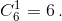

of them etc. Hence,
P $($A$)$ = $6 \times (5/6)^{10}-15 \times (4/6)^{10} + 20 \times (3/6)^{10}-15 \times (2/6)^{10} + 6 \times (1/6)^{10}$.
Consequently, the probability that each number is encountered at least once is 1 - P $($A$)$.
of them etc. Hence,
P $($A$)$ = $6 \times (5/6)^{10}-15 \times (4/6)^{10} + 20 \times (3/6)^{10}-15 \times (2/6)^{10} + 6 \times (1/6)^{10}$.
Consequently, the probability that each number is encountered at least once is 1 - P $($A$)$.
An incredible legend says that one day Stirling was considering the numbers of Stirling of the second kind. During his thoughtfulness, he threw 10 regular dice on the table. After the next throw, he suddenly noticed that in the dropped combination of points there were all of the numbers from 1 to 6. Immediately Stirling reflected: what is the probability of such an event? What is the probability that when throwing 10 dice each number of points from 1 to 6 will drop out on at least one die?
We find the probability of event A "in the fallen combination, some number is not there." Denote by $A_k$ the event "there is no number k". Then A = $A_1 ∪ A_2 ∪ A_3 ∪ A_4 ∪ A_5 ∪ A_6$. Using the formula of probability of association of events, we get: P $($A$)$ = $P (A_1) + P (A_2) + ... + P (A_6) - P (A_1∩A_2) - P (A_1∩A_3) - ... - P (A_5∩A_6) + P (A_1∩A_2∩A_3) + P (A_1∩A_2∩A_4) + ... + P (A_4∩A_5∩A_6) - ... - P (A_1∩A_2∩A_3∩A_4∩A_5∩A_6)$.
All probabilities P$(A_k)$ are equal to $(5/6)^{10}$, and there are 
of them
The probability of pairwise intersections is equal to $(4/6)^{10}$, and there are
of them etc. Hence,
P $($A$)$ = $6 \times (5/6)^{10}-15 \times (4/6)^{10} + 20 \times (3/6)^{10}-15 \times (2/6)^{10} + 6 \times (1/6)^{10}$.
Consequently, the probability that each number is encountered at least once is 1 - P $($A$)$.
$1 - 6 \times (5/6)^{10}-15 \times (4/6)^{10} + 20 \times (3/6)^{10}-15 \times (2/6)^{10} + 6 \times (1/6)^{10}$ ≈ 0.272.
1. For connoisseurs. Recall that the Stirling number of the second kind S$($n, k$)$ is the number of possible unordered ways to partition n elements into k non-empty groups. In our case, we need to enumerate the ordered ways to break 10 dice into 6 non-empty groups: in the first group the ones, in the second group - twos, etc. Hence, there are $6! \times S (10, 6)$ such methods. Using a table of Stirling numbers of the second kind or using recursion
S $($n, k$)$ = S $($n-1, k-1$)$ + kS $($n-1, k$)$ for S $($0, 0$)$ = 1 and S $($k, 0$)$ = S $($0, k$)$ = 0 for k $>$ 0, we find that: S $($10, 6$)$ = 22827. Consequently, the required probability is equal to 
2.5 marks.